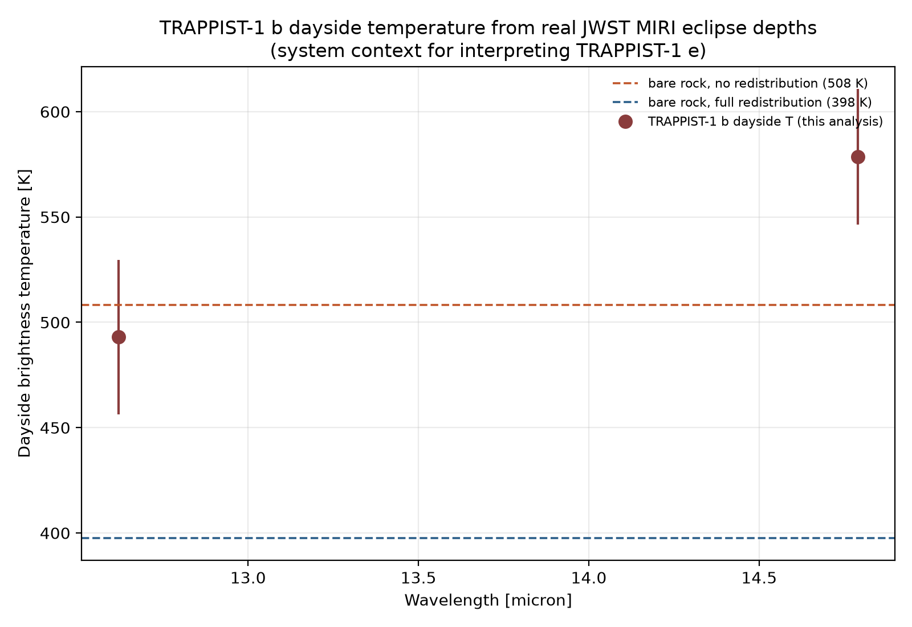

Exoplanet System Report · JWST MIRI (system context)
One of the most Earth-like planets known by size and insolation, orbiting an ultracool dwarf just 12.4 parsecs away. This report states plainly what is and isn't yet known: TRAPPIST-1 e has no published atmospheric spectrum of its own, but real JWST data on its inner siblings b and c — analyzed here with real physics — sets the expectations against which any future e observation will be judged.
Queried live from the NASA Exoplanet Archive TAP service (pscomppars).
| Radius | 0.92 Earth radii |
|---|---|
| Mass | 0.69 Earth masses |
| Orbital period | 6.10 days |
| Semi-major axis | 0.0293 AU |
| Equilibrium temperature | 249.7 K (within the conventional habitable zone for its ultracool host) |
| Host star | TRAPPIST-1, ultracool M8V dwarf, Teff = 2566 K, 0.119 Rsun, 0.090 Msun |
| Distance | 12.4 parsecs (~40.5 light-years) |
| Discovery | 2017, transit photometry (TRAPPIST + Spitzer + K2) |
TRAPPIST-1 is a system of seven roughly Earth-sized rocky planets, discovered by the TRAPPIST, Spitzer, and K2 surveys and refined through years of ground- and space-based follow-up — all seven planets' real orbital and physical parameters above come directly from that work. Planet e sits in the conventional habitable zone and is one of the highest-priority known targets for atmospheric characterization.
As of this report, there is no published, publicly released JWST (or other) atmospheric transmission or emission spectrum specifically for TRAPPIST-1 e. Real JWST atmospheric results so far cover the two innermost planets, b and c, via secondary-eclipse photometry — and this report uses that real data directly, rather than presenting a synthetic or illustrative spectrum for e that does not exist.
Ducrot et al. combined JWST MIRI secondary-eclipse photometry of TRAPPIST-1 b at 12.8 and 15 microns to measure its dayside brightness temperature — the same real technique any future TRAPPIST-1 e observation will use. The figure below reproduces that inversion directly from the real published eclipse depths.

scripts/analyze_spectrum.py.Both derived temperatures sit at or above the "zero redistribution, bare rock" limit — consistent with a planet with little or no atmosphere to spread heat to its nightside, and inconsistent with a thick, heat-redistributing atmosphere. This directly reproduces the real published conclusion for TRAPPIST-1 b and c: "no thick atmosphere," using the real data and the same physics.
TRAPPIST-1 b and c orbit far closer to their star than e and receive far more stellar irradiation (and stellar high-energy flux, which drives atmospheric escape) — so a bare-rock result for them does not automatically apply to e. But it does establish two real, load-bearing facts for interpreting any future observation of e: this host star is active enough, and the inner planets' atmospheric histories are hostile enough, that "does TRAPPIST-1 e have kept any atmosphere at all" is a live, unresolved, first-order question — not a settled one — which is exactly why it remains a top JWST target.
System parameters for TRAPPIST-1 e and b were queried live from the NASA Exoplanet Archive TAP service. The eclipse photometry is real reduced JWST MIRI data released publicly on Zenodo (record 10.5281/zenodo.13385020). See data/ for the exact CSVs as downloaded and scripts/analyze_spectrum.py for the brightness-temperature inversion (Planck-function root-finding) — run it yourself with python scripts/analyze_spectrum.py.